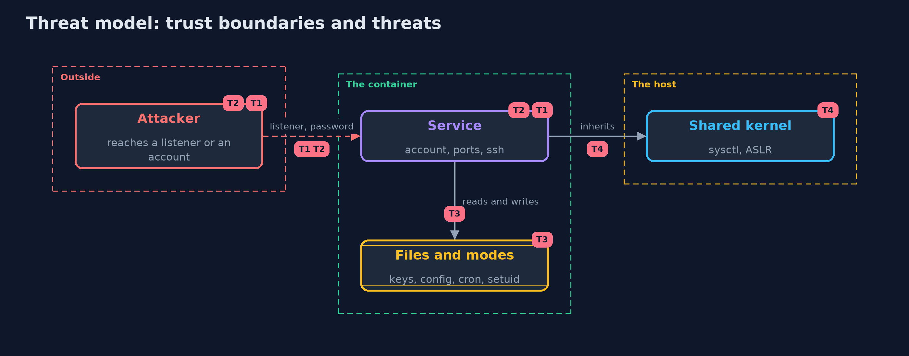

Threat Model — Linux Hardening with Docker
A threat model answers four questions: what are we protecting, who or what could harm it, how, and what do we do about it. This one covers this project's own demo system, not a production deployment. Domain: an online store.
Scope
The server image of an online store and a container started from it: its accounts, files, SSH settings, listeners and namespaced kernel settings. It does not cover the packages inside or the host.
What we protect (assets)
- The shop's data and keys inside the container.
- The host that runs the container.
Who and what acts on the system
- An attacker who reaches a listener or logs in.
- An operator who fixes things with docker exec.
Trust boundaries
A trust boundary is a line that data or a request crosses between parts that trust each other differently. Threats cluster where those lines are.
- The container and the host's kernel.
- The image, which is built once, and the container, which is a copy.

Each dashed box is a trust boundary. A rose tag such as T1 shows where the threat of that number, in the table below, applies.
Threats, using STRIDE
STRIDE is a checklist of six kinds of threat: Spoofing (S), Tampering (T), Repudiation (R), Information disclosure (I), Denial of service (D), Elevation of privilege (E).
| Id | Kind | Threat | Where it shows up | Control in this project | What is left |
|---|---|---|---|---|---|
| T1 | Spoofing | An account with no password or a second root | /etc/passwd and /etc/shadow | A rule for accounts, a recipe with a locked service account | Accounts added at run time |
| T2 | Elevation of privilege | A service that listens where it should not | listeners, sshd_config | An allow-list of ports and SSH settings in the recipe | Listeners started later by a process |
| T3 | Tampering | Files that anyone can change, or a shell with the set-user-id bit | modes in the image | Private modes in the recipe, a rule for set-user-id files | Files created at run time |
| T4 | Information disclosure | Kernel settings that the container cannot control | the shared kernel | Namespaced settings at start-up; the host's settings are the host's to fix | Everything the host has not hardened |
Assumptions
- The image is built from a recipe under review.
- Containers are replaced rather than patched.
Out of scope
- Vulnerabilities in installed packages.
- Escapes from the container.
How the tests check this
ScannerTestruns the rules on text: modes, accounts, sshd settings, listeners and kernel settings.ContainerScanTestbuilds the images and starts real containers for the counts, the fixes and where they live, the hardened image, the kernel options and the drift.DemoRunsTestcompares the whole demo with the golden output.
Where this model goes next
The next project in this module, container-hardening, looks at how the container is started: user, capabilities, mounts and filesystem mode.